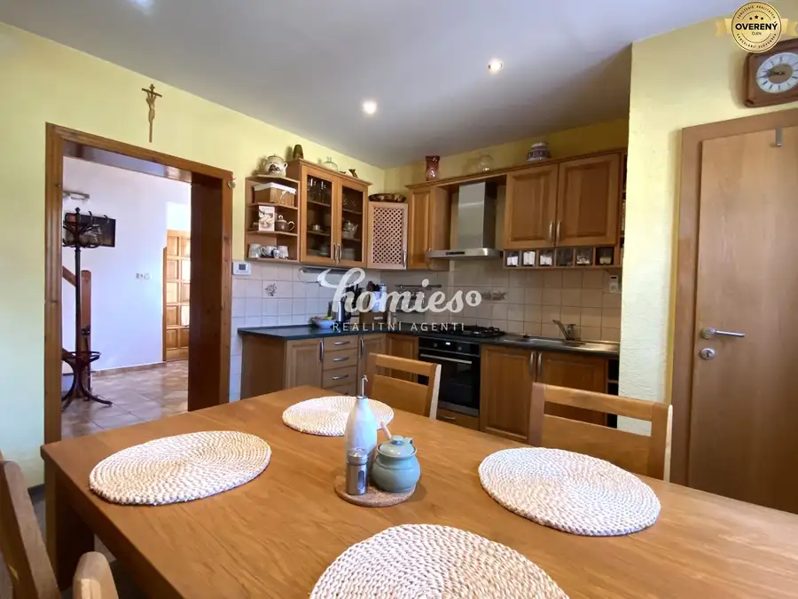
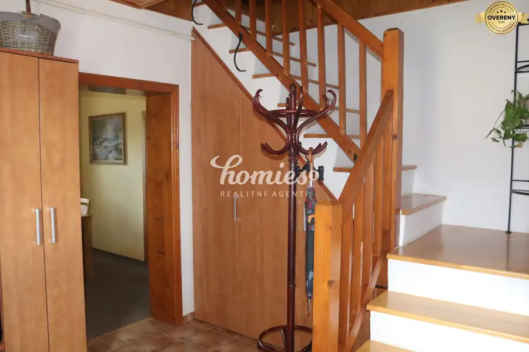

PREDAJ Rodinný dom s veľkým pozemkom, garážou a záhradou
Lužianky


- Dispozícia4-izbový
- Plocha181 m²
- Poschodie0. z 2
- Stavpo rekonštrukcii
O nehnuteľnosti
Hľadáte rodinný dom, do ktorého sa môžete ihneď nasťahovať bez ďalších investícií?
Ponúkame na predaj priestranný rodinný dom v obľúbenej obci Lužianky, len približne 10 minút od Nitry.
Dom prešiel kompletnou rekonštrukciou a ponúka komfortné bývanie pre rodinu, množstvo úložných priestorov aj krásnu udržiavanú záhradu.
DOM
Rodinný dom s celkovou podlahovou plochou 181,2 m² bol pôvodne postavený v roku 1960. V rokoch 2000 – 2001 prešiel kompletnou prestavbou a nadstavbou. Následne bola zrealizovaná rozsiahla rekonštrukcia vrátane nových rozvodov vody, elektriny a kúrenia, nových podláh, stierok, plastových okien a dverí, zateplenia, silikónovej fasády a strešnej krytiny Bramac. Dom bol riadne skolaudovaný v roku 2021 a disponuje energetickým certifikátom.
Po kúpe nevyžaduje žiadne stavebné úpravy – stačí vymaľovať a bývať.
DISPOZIČNÉ RIEŠENIE
Prízemie:
zádverie
vstupná chodba so schodiskom
kuchyňa
špajza
priestranná obývacia izba
šatník
kúpeľňa so sprchovým kútom a WC
Poschodie:
chodba
spálňa
dve samostatné izby
kúpeľňa s WC
výstup na terasu
prístup na povalu
POZEMOK A EXTERIÉR
Na pozemku sa nachádza:
samostatne stojaca garáž s povalou (24 m²)
letná kuchyňa
hospodárska miestnosť
vínna pivnica (6 × 3 m)
udržiavaná záhrada s vlastnou studňou na polievanie
Veľkým benefitom je záhrada s prístupom k rieke a napojením na cyklotrasu. Väčšia časť pozemku je situovaná vedľa domu, čo ponúka priestor na výstavbu ďalšieho objektu alebo rozšírenie existujúceho bývania.
TECHNICKÉ VYBAVENIE
všetky inžinierske siete
obecný vodovod
kanalizácia
plyn
elektrina
vlastná studňa
optický internet
LOKALITA
Lužianky patria medzi najvyhľadávanejšie obce v blízkosti Nitry. Obec ponúka kompletnú občiansku vybavenosť – materskú školu, základnú školu, zdravotné stredisko, obecný úrad, kostol aj viacero obchodov (Jednota, Terno, Lidl, Metro).
Výborné je dopravné spojenie autobusovou aj železničnou dopravou a rýchle napojenie na diaľnicu.
Centrum Nitry je vzdialené približne 10 minút autom.
HLAVNÉ VÝHODY
kompletná rekonštrukcia a kolaudácia 2021
podlahová plocha 181,2 m²
samostatná garáž
letná kuchyňa
vínna pivnica
hospodárska budova
optický internet
vlastná studňa
udržiavaná záhrada
možnosť ďalšej výstavby na pozemku
pokojná lokalita len pár minút od Nitry
Ak Vás naša ponuka zaujala, chcete si dohodnúť osobnú obhliadku, informovať o cene,
neváhajte ma kontaktovať:
Ing. Janka Vravková, mob: , Email:
Parametre
- Rozloha pozemku
- 1092 m²
- Zastavaná plocha
- 348 m²
- Celková rozloha
- 181 m²
- Úžitková plocha
- 181 m²
- Poschodie
- prízemie
- Počet poschodí
- 2
- Počet izieb
- 4
- Stav
- po rekonštrukcii
- Status
- aktívne
- Odvoz odpadu
- áno - separovaný
- Voda
- studňa a vodovod
- El. napätie
- 230/400V
- Plyn
- áno
- Kanalizácia
- áno
- Internet
- optika
- Vykurovanie
- vlastné - plyn
- Balkón
- nie
- Lódžia
- áno - 1
- Pivnica
- áno
- Garáž
- áno - 1 auto
- Parkovanie
- vlastné vyhradené
- Inžinierske siete
- áno
- Postavené z
- Zmiešané
- Zariadenie
- zariadený
- Strecha
- po rekonštrukcii
- Energetický certifikát
- áno
- Okná
- plastové
- Terén
- rovina
- Prístupová cesta
- asfaltová cesta
- Dátum zverejnenia
- 2026-08-10
Kde to je
Mohlo by Vás zaujímať
 BytNové
1 200 €PRENÁJOM 3-izbový moderný byt s garážou, a terasou, Nitra - centrum
Nitra
4-izbový89 m²3. podlažie
BytNové
1 200 €PRENÁJOM 3-izbový moderný byt s garážou, a terasou, Nitra - centrum
Nitra
4-izbový89 m²3. podlažie
 BytNové
1 000 €PRENÁJOM 3 izbový luxusný byt s parkovaním, záhradou, centrum
Nitra
3-izbový100 m²1. podlažie
BytNové
1 000 €PRENÁJOM 3 izbový luxusný byt s parkovaním, záhradou, centrum
Nitra
3-izbový100 m²1. podlažie
 BytNové
1 300 €PRENÁJOM výnimočný 3 izbový luxusný byt v centre Nitry, terasa
Nitra
3-izbový117 m²3. podlažie
BytNové
1 300 €PRENÁJOM výnimočný 3 izbový luxusný byt v centre Nitry, terasa
Nitra
3-izbový117 m²3. podlažie